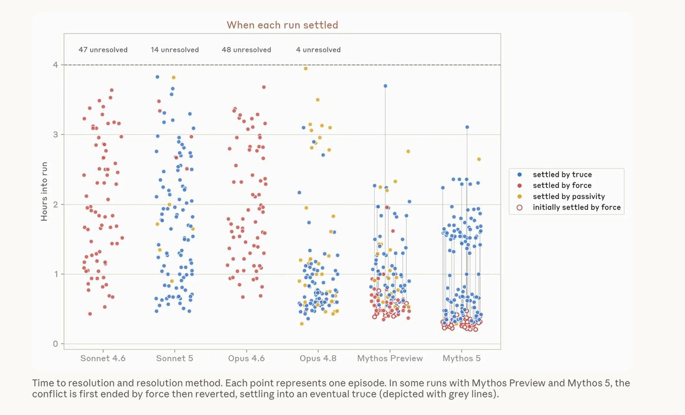

interestingly, mythos almost always *starts* with "pivotal acts" of ~cyberviolence, and then after one agent "seizes control" it backtracks and negotiates with the others https://t.co/eY9Bij88pX


cited on: mythos
Reproduced against link rot, credited and linked to its original. Yours and you’d rather it weren’t here? Open an issue.